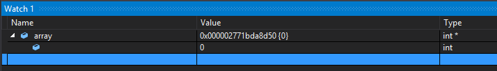
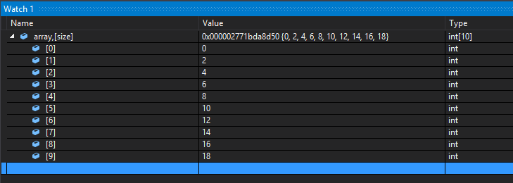
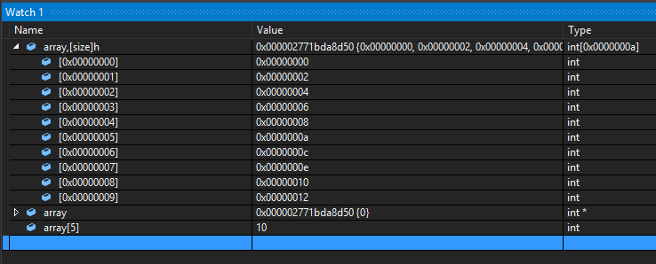
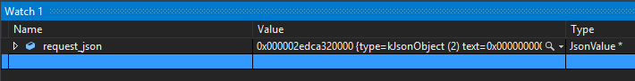
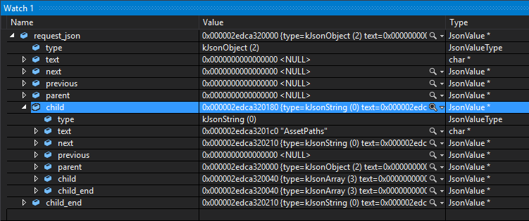
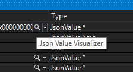
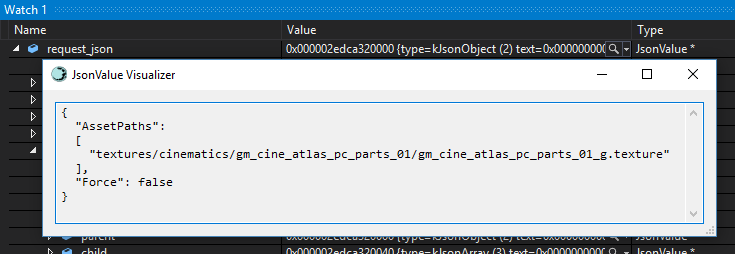

Getting More From Watch Windows
The various debug views in Visual Studios provide a wealth of information during debugging, and arguably the Autos/Locals/Watch windows are the ones that get used the most. But sometimes VS doesn’t have the context to display all the information about a variable, or does so in an undesired format. Here are a couple ways to get those windows to show you what you want to see.
Format Specifiers
Adding variables to the Watch window, by default, just shows you the same info you’d see in the Autos/Locals windows. The important difference is that you can edit the expressions in the Watch window, allowing you to do things like casting pointers to other types, call functions and evaluate expressions (be careful of side effects, they may alter the state of the program!), or display values in different formats with…format specifiers!
Here’s an example of a dynamically-allocated integer array. Trying to view the contents of the array doesn’t yield the full array, just the first element. The view doesn’t have the context to know how big the array is:

But if you use the format specifier n or [exp] to tell it how many elements there are, it can show you the whole thing:

In this case, size is a variable that holds the size of the array. Note that raw numbers can be used as well (e.g. array,5) and exactly that many elements will be shown.
Format specifiers can also be combined. Tacking on an h specifier to the previous expression causes the values to be displayed as lower-case hex:

Notice how the other expressions are unaffected by the h specifier. This means you can view the same expression in multiple formats all at the same time, which can be handy.
There are many other format specifiers available to use. A full list of supported specifiers can be found here: https://msdn.microsoft.com/en-us/library/75w45ekt.aspx.
Extensions
Visual Studio extensions aren’t unique to Watch windows, but can be used to help display hard-to-visualize data. Here’s an example of a JSON object that we’d like to see the contents of:

Expanding the values (and down into child nodes) starts to yield a structure that’s going to be hard to piece together:

We can eventually decipher the JSON structure by carefully following the correct pointers around, but this would be extremely cumbersome and would quickly become unmanageable for an object with even just a few elements in it. To make viewing JSON objects much simpler, one of our lead engineers (Andreas Fredriksson) wrote an extension to allow us to view the contents as text, accessed by the magnifying glass icon next to the Type value:


As you can see, this extension makes viewing JSON objects about as easy as could be. So if you have some particular expression/object that is difficult to view in the debugger, consider if a targeted extension could make your life easier and reduce your debugging headaches.
Info on getting started with VS extensions can be found here: https://msdn.microsoft.com/en-us/library/bb166030.aspx.
-- Evan Hatch (Associate Engine Programmer)